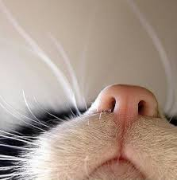
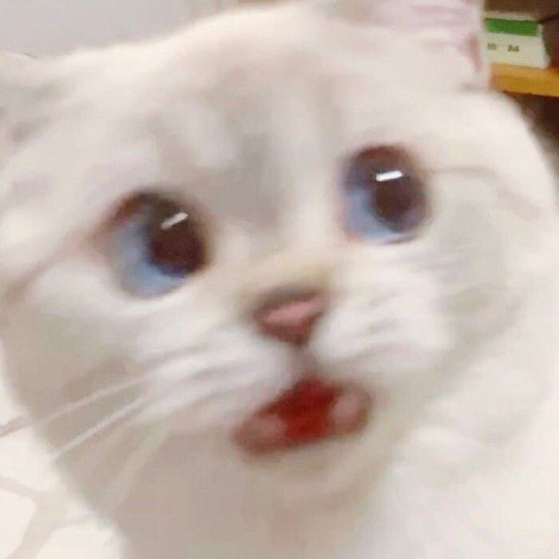

눈과 귀가 크고 멋진 미남.우는 소리조차 귀엽다.
어린 시절을 원룸에서 보낸 탓인지 다른 고양이에게 관심이 없는 편이다.
성격은 지극히 자기 중심적.골판지 상자 모서리나 기둥에 발톱 갈기를 좋아한다.
우리 집 야옹이 소개
스바루(셀카 고양이)

특징: 커다란 눈과 귀, 말린 꼬리.
성격: 자기 중심적.
그레코(깜놀 고양이)

갓 태어났을 때는 아메리칸 쇼트헤어 같았는데 크면서 점점 잿빛
고양이로 바뀌었다. 긴털을 가진 품종의 혈동이 좀 섞였는지 털이
부드럽고 푹신푹신하게 부풀어 있어 가족들이 애교를 잘 부리고 처음
보는 사람에게도 낯을 가리지 않고 스스럼 없이 다가오기 때문에
사람들이 굉장히 귀여워 한다.
특징: 새된 소리, 데굴데굴 구르며 공격.
성격: 애교가 많다.